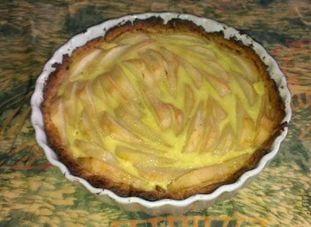

Pear cream tart recipe
Prep Time: 30 minutes - Cook Time: 40 minutes - Servings: 6

Ingredients:
- 4 pears
- pie crust (make it or buy it)
- 1 egg yolk
- 15 cl of heavy whipping cream
- vanilla extract
- a pinch of salt
Instructions:
- Pre-heat oven at 375°F.
- Spread pie crust on dish and make holes with a fork.
- Put in oven for 5 minutes.
- Place peeled and cut pears.
- (optionally) Sprinkle some cinnamon.
- Cook for 25 minutes.
- Add cream (egg yolk + whipping cream + vanilla extract + pinch of salt all whipped together).
- Put back in oven and turn off oven. Let cook for 5 minutes while oven is cooling down.
Notes: Great with a scoop of Vanilla ice cream (à la mode).
Notes: When using apples instead of pears, I sprinkle the tart with brown sugar before baking. Also, apples are less juicy than pears, so I can skip the 5 minutes cooking the crust alone.